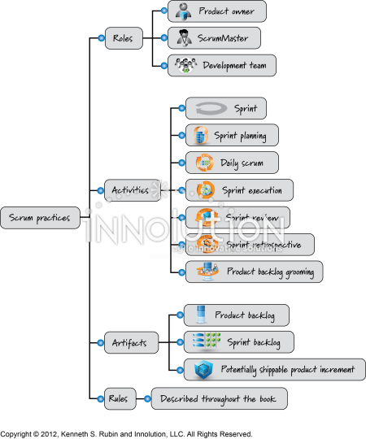
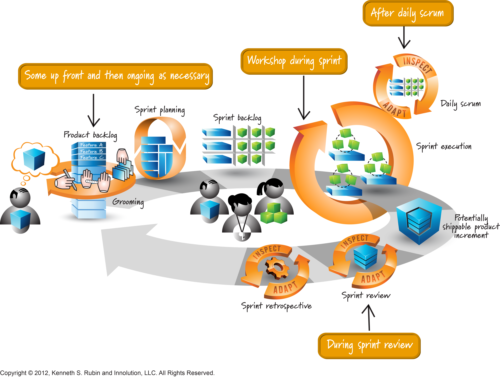

Scrum Quick Guide

What is product backlog grooming?
Product backlog grooming, now usually called backlog refinement, is the ongoing Agile practice of keeping the product backlog clear...
Read more...
What is Daily Scrum, who participates, and what is the objective? What is not Daily Scrum?
The Daily Scrum is a short, 15-minute event held every working day of a sprint, ideally at the same time and place to keep things simple. Its objective is...
Read more...What is a Sprint Review activity?
The whole Scrum Team attends (Product Owner, Scrum Master, and Developers), along with stakeholders the Product Owner invites, such as customers, users, or business leaders. The review is timeboxed to...
Read more...
What is a Sprint Retrospective activity?
The Sprint Retrospective is the final event of each sprint, held after the Sprint Review. Its purpose is to help the...
Read more...
What is the difference between a Sprint backlog and a Product Backlog?
The Product Backlog is a prioritized list of all the features, improvements, bug fixes, and other work needed for a product. It is managed by the Product Owner, who
Read more...
What is Sprint execution?
Sprint execution is the phase of the Scrum framework in which the development team works on the items selected in the Sprint Backlog to achieve the Sprint Goal. During this phase, team members collaborate to...
Read more...
Who is Kenneth S. Rubin? What does he know about Scrum?
Kenneth S. Rubin is an Agile and Scrum educator, coach, and author. He founded Innolution, LLC, a company that...
Read more...What are the responsibilities of a DevOps professional?
Scrum doesn't define a "DevOps person." The framework has three roles: Product Owner, Scrum Master, and Developers. In practice, many teams include...
Read more...